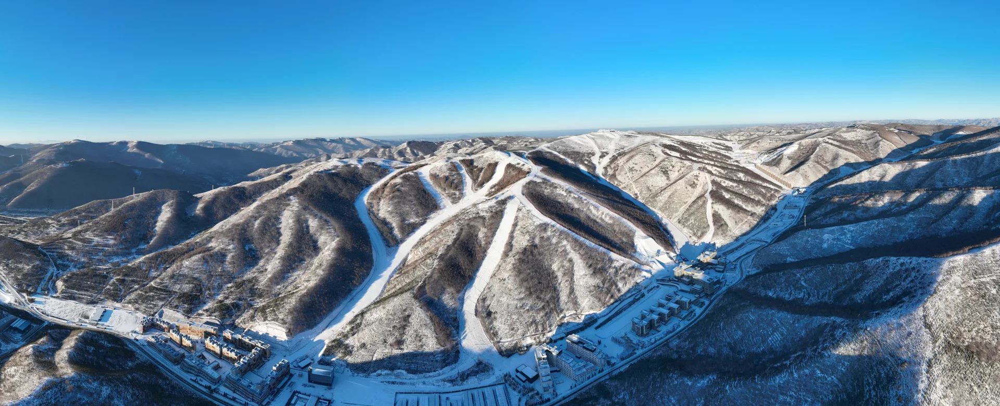
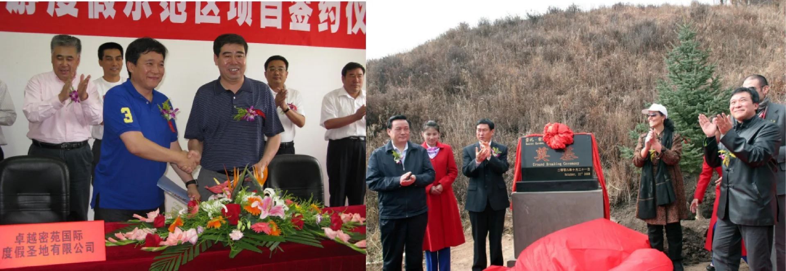
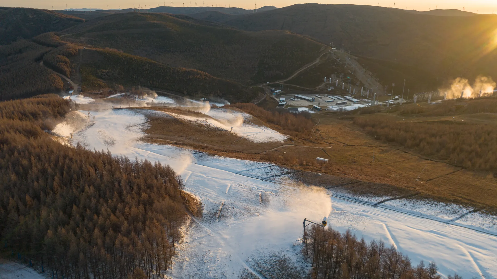
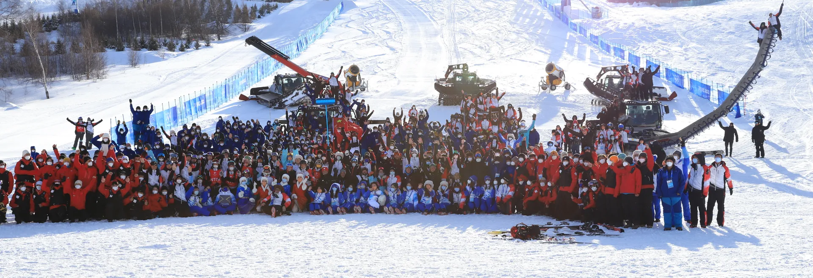
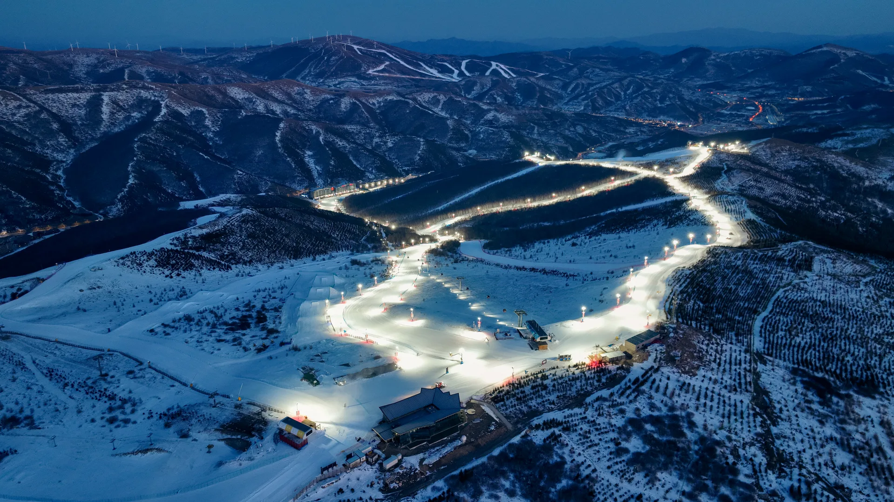
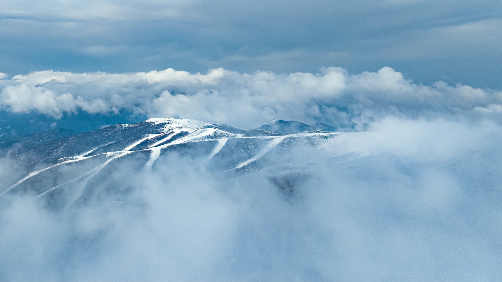

LIVELIHOODS / REPORTED FEBRUARY 2026
Nearly
30,000
Chongli residents directly or indirectly employed in winter sports and tourism. [3]


GENTING SECRET GARDEN / CHONGLI, CHINA
A mountain.
A world of opportunity.
From a long-term investment to an Olympic stage — and a place in Chongli’s growing visitor economy.
01 / THE BEGINNINGS
2008
Development agreement & groundbreaking
A partnership with a place.
In August 2008, Datuk Lim Chee Wah signed a development and investment agreement with the local government in Chongli. Groundbreaking followed that October.
The work began years before the Olympic bid: bringing investment, resort infrastructure and an operating team together around the mountain’s potential. [1]

02 / BUILDING CAPABILITY
The people behind every day on the mountain.
Snowmaking, grooming, mountain safety, hospitality and event operations all require specialist skills. Secret Garden’s project history records years of training and practice that developed its international resort operations team.
This is how a destination builds lasting capability: people who can run it, maintain it and welcome the next generation of visitors. [1]



03 / THE WORLD STAGE
In 2022, Genting Snow Park hosted Olympic freestyle skiing and snowboarding, followed by Paralympic competition. Years of preparation became a moment of international recognition. [1]
Genting Snow Park · Project presentation, December 2024
04 / LOCAL ECONOMIC VALUE
A destination creates demand around it.
Visitors need places to stay, meals, equipment and services. Chongli’s growing ski economy has expanded opportunities across hospitality, retail and resort operations.
Secret Garden is part of that wider transformation, alongside other resorts, local businesses and public investment. The figures below describe Chongli district as a whole. [2] [3]
CHONGLI / TOURISM REVENUE
6.7×the 2010 level by 2019
A decade of growth before the Games.
LIVELIHOODS / REPORTED FEBRUARY 2026
Chongli residents directly or indirectly employed in winter sports and tourism. [3]
VISITOR ECONOMY / 2025
Visits to Chongli during 2025, as reported in February 2026. This is a district total, not Secret Garden attendance. [3]
WHAT GROWTH LOOKS LIKE ON THE GROUND
A Chongli ski-equipment shop featured in a 2026 report grew from about 40 to 200 square metres, employed more than a dozen people and added rental and delivery services. It is one example of the businesses serving the wider destination. [3]
05 / THE LASTING VALUE
Built for the years that follow.
Secret Garden returned to public skiing and tourism after the Games, while retaining Olympic courses for international events. Its long-term plan brings winter sport together with summer stays, leisure and business gatherings.
The enduring opportunity is to turn a moment of global attention into repeat visits, skilled work and demand for local services across the seasons. [1]
Secret Garden resort figures and vision · December 2024 project presentation, pp. 25–27. [1]

LONG-TERM VISION. SHARED OPPORTUNITY.